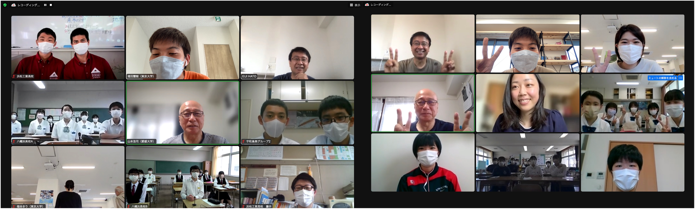
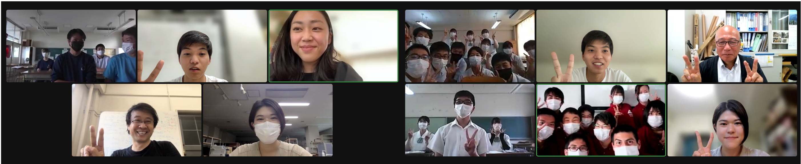
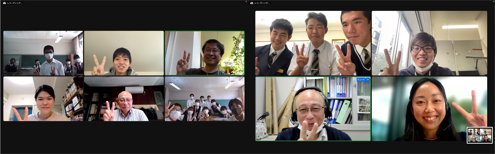
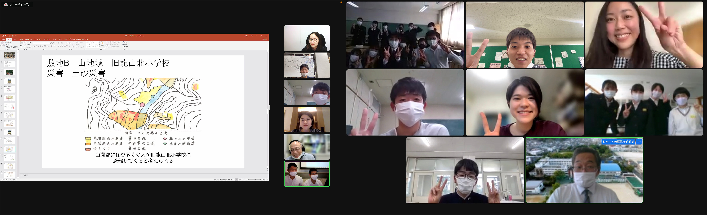

目次
防災地理部の活動理念
地理学者ブローデルの「地中海」を手にとると，「まず初めに山地」という意外な文章で始まります．地形によってその運命を大きく左右された地中海を描いた物語は，人間の生活全般に対して，長くにわたって影響を与え続ける地域的・社会的な構造の学問「地理」の重要性を示唆しています．地理を学ぶことは，その地域に生きる上で必須であることは疑いの余地もない，しかし私たちは，自分たちが暮らしている地域のことをどれだけ知っているといえるでしょうか．
災害は忘れた頃にやってくる．長い時間，地域で暮らしていれば，災害に直面することもあるでしょう．災害が一度起きれば，地域の存続そのものが左右されることになります．危機に直面した地域で，わたしたちは，身の回りの暮らし，経済，文化の問題解決を迫られることになるでしょうか．そのとき，私たちは，何を頼りに，復興のための道筋を描けばいいでしょうか．「地域のよりよい理解」を下敷にした「災害復興への備え」を考えることが今求められています．
「防災地理部」では，地域で生きる私たち自身が，さまざまな世代の人々とともに，自ら地域を歩き，語りあい，問題を発見すること．さまざまな声に耳を傾け，懸命に考えること．そうして得られた地域のよりよい理解に基づいて，地図を囲んで線を引き，地域の復興と災害への備えを描くことに，みんなで取り組んでみたいと考えています．
こうした学びを独習で進めることは簡単ではありません．防災地理部では，東京大学工学部社会基盤学科の基礎プロジェクト１で，学部３年生が取り組んでいる演習を下敷に，土木学会の協力を得て現在収集中の東日本復興アーカイブなどを学びの素材として活用することを試みます．地域の地理の総合理解，地理的課題の抽出と災害シナリオの作成，事前復興計画の策定までを，複数の学校共同で行い，東京大学で11月に開催予定の復興デザイン会議で復興に携わる全国の人に向けて発信します．
災害からの地域復興は，どのような形をとるにせよ，そのいずれもが，空間の力を借りることなく，十分な力を発揮することは難しいでしょう．「防災地理部」では「地理」と「防災」の問題を，同時に現場で考えることを通じて，地域で生きる術を学んでいくための活動の場です．地域のみなさんと一緒に楽しく学んでいきましょう．なにとぞよろしくお願いいたします．
羽藤英二
活動概要
活動の進め方（詳細とポイント）
慣れ親しんだ地域の地形や歴史、地域の人々の声から学び、南海トラフ地震や豪雨災害が起きた場合に課題となることは何か、自分たちに今何ができるかについて、みんなで議論します。地域の方や家族への過去の災害に関するインタビュー、同級生へのアンケート、レイヤー分析や歴史史料調査など、地元に住む中高校生だからこその視点を生かして事前復興プランを考えます。
2022年度は阿南工業高等専門学校、宇和島東高校、大阪教育大学附属天王寺中学校、新居浜南高校、なみえ創成中学校、浜松工業高校、三崎高校、八幡浜高校の中学校・高校・高専生の皆さんが参加してくれます。
全国中学生・高校生復興デザインコンペ2022（外部サイト）
募集要項
2020年度に始動した防災地理部の活動の輪を広げていくため，全国から中学生・高校生による地域の事前復興プランを公募します．LINE WORKS等のツールを通して顧問の教授陣，大学生コーチ陣とコミュニケーションを取りながら，事前復興プランを作成していきます．
演習資料
復興学習
石巻がれき処理：
宮城県石巻市は東日本大震災で甚大な被害を受け，かつて北上川の水運で栄えた港町は一面の災害廃棄物に覆い尽くされました．終わりの見えないがれき処理業務の先頭に立ち，被災されたの作業員の方々とともに約3年にも及ぶ大事業を完了させた伊藤さんに，当時の様子と復興への思いを伺いました．
↓インタビュー動画はこちらから
復興学習アーカイブ取材協力：鹿島建設株式会社，一般社団法人 日本建設業連合会
分析方法
レイヤー分析：
都市を構成する諸要素をひとつずつレイヤーに写し取り，各要素や要素間の共時的・通時的な関係性を読み解くのがレイヤー分析です．本項ではレイヤー分析の概要と分析例を紹介しています．
↓レイヤー分析の説明と分析例の動画はこちらから
過去の演習成果のまとめ
防災地理部2021：
2021年度の防災地理部の活動概要と成果物です．
防災地理部2020：
2020年度の防災地理部の活動概要と成果物です．
基礎プロジェクトⅠ（2021年度）：（対象敷地：東京都江東区）
2021年度夏学期の学部3年生の演習，基礎プロジェクトⅠの概要と成果物です．
日程
| 日 | 形式 | 内容 | 参加人数 |
|---|---|---|---|
| 6/11(土) | 初回授業 | ガイダンスと敷地の議論 調査手法の紹介 復興に関する議論 | 宇和島東A（女子5） 宇和島東B（女子2） 新居浜南（男子4，女子5） |
| 6/12(日) | 初回授業 | ガイダンスと敷地の議論 調査手法の紹介 復興に関する議論 | 宇和島東C（男子2） 浜松工業（女子1，男子2） 八幡浜A（男子1，女子7） 八幡浜B（男子3，女子6） |
| 8/11（木） | 第二回授業 | 進捗報告・エスキース 大学生の研究紹介 | 新居浜南（女子1，男子3） |
| 8/23（火） | 第二回授業 | 進捗報告・エスキース 大学生の研究紹介 | 浜松工業（女子4，男子7） 八幡浜A（男子1，女子7） 八幡浜B（男子10，女子10） |
| 10/23（日） | 第三回授業 | 進捗報告・エスキース | 八幡浜高校A（男子1，女子4） 八幡浜高校B（男子5，女子5） |
| 10/27（木） | 第三回授業 | 進捗報告・エスキース | 三崎高校 （防災ブック7名, カード4名, RPG4名） |
| 11/8（火） | 中間講評会 | 中間発表 各校の分析・調査内容のまとめ 各チームへのエスキス・議論 | 浜松工業高校（男子7，女子4） |
| 11/13（日） | 中間講評会 | 中間発表 各校の分析・調査内容のまとめ 各チームへのエスキス・議論 | 八幡浜高校（男子4, 女子9） 大阪教育大学附属天王寺中学校（男子1） 宇和島東高校（女子4） |
| 11/18（金） | 中間講評会 | 中間発表 各校の分析・調査内容のまとめ 各チームへのエスキス・議論 | 新居浜南高校 |
| 11/27（日） | 復興デザイン会議 第4回全国大会 | 最終発表 |
活動報告
第1回授業
6月11日参加校：宇和島東高校，新居浜南高校
6月12日参加校：宇和島東高校，浜松工業高校，八幡浜高校
2022年度の防災地理部の活動が始動しました．防災や事前復興の理念を学び，平時と災害時の地域の課題を解決するために高校生にできることは何か・何をしていきたいかをみんなで議論しました．地域の視点からの非常食や防災グッズの開発，空き家のリノベ，災害民話伝承・創作，企業と連携した事前復興，避難経路の調査など，多様で柔軟な発想で地域に貢献しようとしています．今年の活動も楽しみです．

第2回授業
8月11日参加校：新居浜南高校
8月23日参加校：浜松工業高校，八幡浜高校
各チームからの進捗報告を受け，顧問（大学教授）と大学生がそれぞれのチームをまわり，高校生からの質問に答えました．各校とも課題が明確になり具体的な作業に入っていきますが，「地域のために高校生だから描ける将来像や防災を考える」という初心を忘れず活動を進めていきましょう．後半は，復興や避難の研究に取り組む東京大学の大学院生から研究を紹介しました．アプローチは少し違いますが目標は同じところにあります．
↓研究紹介動画はこちらから

第3回授業
10月23日参加校：八幡浜高校
10月27日参加校：三崎高校
八幡浜高校では、文化財保護班、企業連携班、自然環境保護班に分かれてそれぞれの視点で事前復興を考えています。地域の大人へのインタビューーや防災に関する会議など生の声を拾い集める活動が印象的です。羽藤先生からは地図で表現することや、他地域の事例を参照するようにアドバイスをいただきました。
三崎高校は、先輩の活動を引き継ぎ、防災ブックとカードゲーム、RPGの作成を通じて、地域の防災力の底上げを目指し活動しています。実際に形にしてしまうと、考えが伝わり人は動く。ものづくりの持つ力は計り知れませんが、山本先生からは、大切なのはゲームで何を伝えたいかである、とコメントいただきました。

中間講評会
11月8日参加校：浜松工業高校
11月13日参加校：宇和島東高校、大阪教育大学附属天王寺中学校、八幡浜高校
11月18日参加校：新居浜南高校
浜松工業高校の授業には、名古屋工業大学の中居楓子先生と豊橋技術科学大学の佐藤凌真さんに参加いただきました。廃校を利用したプランが災害対策を超えて平時の地域のアイデンティティを守る活動であることや、2022年の台風15号の経験をまとめて伝えることの重要性についてアドバイスいただきました。
宇和島東高校は同級生への避難アンケートと避難所の現地調査をもとに、避難所のチェックポイントや災害リスクを調べようとしています。過去の災害の教訓から避難する場所に必要なことを学ぶこと、アンケートを地図の上に落とすことが議論されました。
大阪教育大学附属天王寺中学校は、都心の地下鉄を災害時の避難シェルターに利用することを考えています。梨泰院の雑踏事故を踏まえて、駅内外の人の動きを管理することの重要性や、鉄道運行再開までの時間軸に沿って考えることの重要性を議論しました
八幡浜高校は、文化財の事前復興、災害時の企業連携、子ども食堂の防災と防災教育を考えています。いずれも実効性が高くこれまでにない復興デザインを提案しています。文化財の持ち主や、企業、子供など多くの人が関わりますが、その人たちをどうしたら事前復興に巻き込めるか、伝えたいメッセージは何かについて残り2週間で考えていきましょう！
